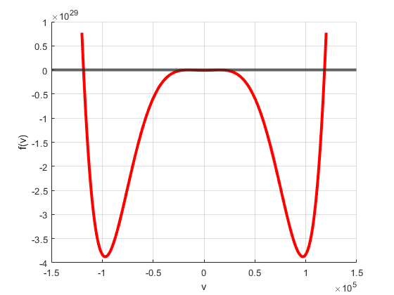
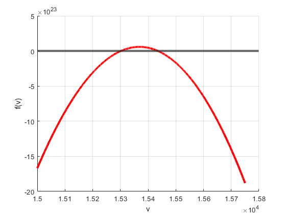

Contents
clear
clc
close all
Define the constants
gamma = 5/3;
p = 1.38*1e-11;
rho = 1.67*1e-21;
B = 1e-9;
magcst = 4*pi*1e-7;
theta = pi/4;
s = sin(theta);
ss = s^2;
c = cos(theta);
cs = c^2;
Cs = sqrt(gamma*p/rho);
Css = Cs^2;
Ca = sqrt(B^2/(magcst*rho));
Cas = Ca^2;
Define the poly
o = 6;
i = o;
A(:,1) = [1;0;-(Css+Cas*(1+cs));0;Cas*cs*(Cas+2*Css);0;-(Cas*cs)^2*Css];
Newton's Method
maxit = 1000000;
tol = 1e-6;
v0 = 10000;
for j = 1 : o
if i == 6
v0 = 10000;
F = @(x) A(1,j)*x^(o+1-j) + A(2,j)*x^(o-j) + A(3,j)*x^(o-1-j) + A(4,j)*x^(o-2-j) + A(5,j)*x^(o-3-j) + A(6,j)*x^(o-4-j) + A(7,j)*x^(o-5-j);
Fprime = @(x) (o+1-j)*A(1,j)*x^(o-j) + (o-j)*A(2,j)*x^(o-1-j) + (o-1-j)*A(3,j)*x^(o-2-j) + (o-2-j)*A(4,j)*x^(o-3-j) + (o-3-j)*A(5,j)*x^(o-4-j) + (o-4-j)*A(6,j)*x^(o-5-j);
elseif i == 5
v0 = 20000;
F = @(x) A(1,j)*x^(o+1-j) + A(2,j)*x^(o-j) + A(3,j)*x^(o-1-j) + A(4,j)*x^(o-2-j) + A(5,j)*x^(o-3-j) + A(6,j)*x^(o-4-j);
Fprime = @(x) (o+1-j)*A(1,j)*x^(o-j) + (o-j)*A(2,j)*x^(o-1-j) + (o-1-j)*A(3,j)*x^(o-2-j) + (o-2-j)*A(4,j)*x^(o-3-j) + (o-3-j)*A(5,j)*x^(o-4-j);
elseif i == 4
v0 = -10000;
F = @(x) A(1,j)*x^(o+1-j) + A(2,j)*x^(o-j) + A(3,j)*x^(o-1-j) + A(4,j)*x^(o-2-j) + A(5,j)*x^(o-3-j);
Fprime = @(x) (o+1-j)*A(1,j)*x^(o-j) + (o-j)*A(2,j)*x^(o-1-j) + (o-1-j)*A(3,j)*x^(o-2-j) + (o-2-j)*A(4,j)*x^(o-3-j);
elseif i == 3
v0 = -20000;
F = @(x) A(1,j)*x^(o+1-j) + A(2,j)*x^(o-j) + A(3,j)*x^(o-1-j) + A(4,j)*x^(o-2-j);
Fprime = @(x) (o+1-j)*A(1,j)*x^(o-j) + (o-j)*A(2,j)*x^(o-1-j) + (o-1-j)*A(3,j)*x^(o-2-j);
elseif i == 2
F = @(x) A(1,j)*x^(o+1-j) + A(2,j)*x^(o-j) + A(3,j)*x^(o-1-j);
Fprime = @(x) (o+1-j)*A(1,j)*x^(o-j) + (o-j)*A(2,j)*x^(o-1-j);
elseif i == 1
F = @(x) A(1,j)*x^(o+1-j) + A(2,j)*x^(o-j);
Fprime = @(x) (o+1-j)*A(1,j)*x^(o-j);
end
[roots(j,1),it(j,1),success(j,1)] = newton_exact(F,Fprime,v0,maxit,tol);
for k = 1 : o+1-j
if k == 1
A(k,j+1) = A(k,j);
else
A(k,j+1) = A(k,j) + roots(j,1)*A(k-1,j+1);
end
end
i = i - 1;
end
table(roots,it,success)
ans =
6×3 table
roots it success
___________ __ _______
15301 10 true
15436 5 true
-15301 11 true
-15436 4 true
-1.1838e+05 7 true
1.1838e+05 1 true
Plot the polynomial
figure
grid on
j = 1;
v = -120000:0.1:120000;
yline(0,'LineWidth',3)
hold on
plot(v,A(1,j)*v.^(o+1-j) + A(2,j)*v.^(o-j) + A(3,j)*v.^(o-1-j) + A(4,j)*v.^(o-2-j) + A(5,j)*v.^(o-3-j) + A(6,j)*v.^(o-4-j) + A(7,j)*v.^(o-5-j),'r','LineWidth',3);
xlabel('v');
ylabel('f(v)');
hold off
figure
grid on
v = 15000:0.1:15750;
yline(0,'LineWidth',3)
hold on
plot(v,A(1,j)*v.^(o+1-j) + A(2,j)*v.^(o-j) + A(3,j)*v.^(o-1-j) + A(4,j)*v.^(o-2-j) + A(5,j)*v.^(o-3-j) + A(6,j)*v.^(o-4-j) + A(7,j)*v.^(o-5-j),'r','LineWidth',3);
xlabel('v');
ylabel('f(v)');
hold off
 